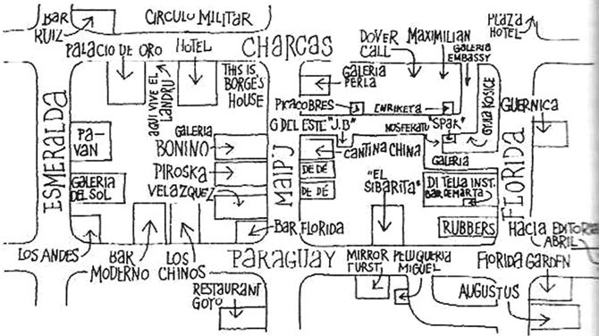
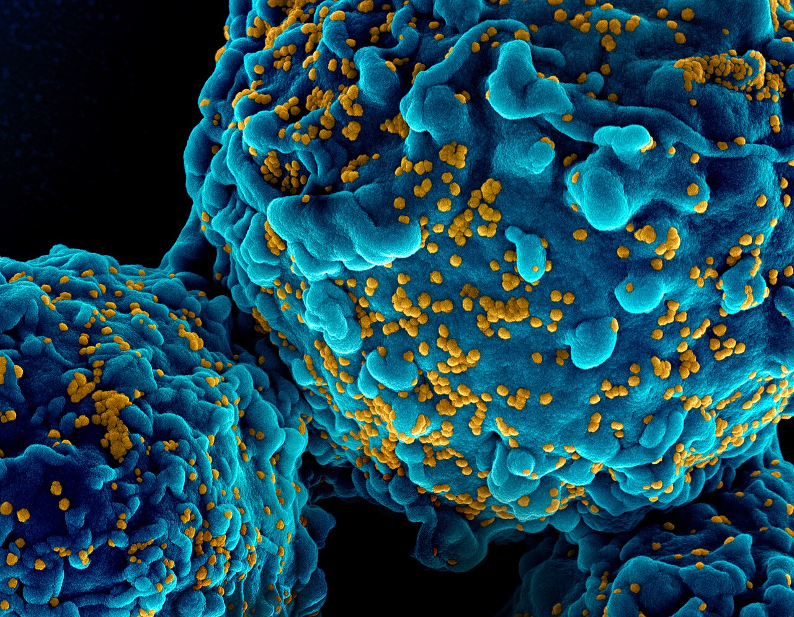

Lula.
diario de la mañana — el mundo, tu ciudad y lo que te asombra

Buen día. Martes de 12° a 18°, con humedad alta y viento liviano. Acá se siente el «efecto Lula»: el riesgo país saltó a 765 puntos y el Tesoro tuvo que vender dólares. La ciencia de hoy es un mapa: el sistema inmune humano entero, célula por célula, de los dos meses a los ochenta y ocho años, y qué tienen en común los bebés y los viejos. Y en moda, la calle Florida de los sesenta, cuando la ropa se volvió joven por primera vez.
- El mundo en cinco minutos3'
- Argentina y Buenos Aires2'
- Ciencia: el mapa del sistema inmune7'
- Mirá a tu alrededor2'
- Receta de estación2'
- La palabra del día1'
- Le français du matin2'
- English corner3'
- Martes de moda: Florida, años sesenta5'
- Hoy en la historia · un lugar2'
- Lo que me asombra hoy1'
- Pasatiempo: sudoku fácil10'
- Cuaderno: repaso, quiz y escritura4'
Israel vota, y Cuba vuelve a la ONU por el embargo
Israel elige hoy entre la continuidad de Benjamin Netanyahu y una coalición de centroderecha armada alrededor de ex militares, entre ellos Gadi Eisenkot. Es la elección que define también el ritmo de la guerra regional que lleva ocho meses.
En Nueva York, Cuba presenta hoy y mañana ante la Asamblea General de la ONU su resolución anual contra el embargo estadounidense. Es un voto casi ritual —se aprueba todos los años por abrumadora mayoría y no cambia nada en la práctica—, pero sirve de termómetro del aislamiento de Washington en el tema.
Un alto el fuego de tres cuadras
Rusia y Ucrania anunciaron un alto el fuego local en Oleshki, en la región de Jersón, con mediación estadounidense, para evacuar civiles. No es una tregua general: es un corredor puntual, del tipo que se negocia para sacar gente de una zona rodeada.
Y además: en Irán, ocho meses de guerra con Estados Unidos e Israel dejaron precios imposibles: comprar el auto más barato del mercado o un celular se volvió inalcanzable para buena parte de la población. El petróleo tocó máximos de cinco meses. Y en Ereván sigue la COP17 de biodiversidad, que cierra el viernes.
El «efecto Lula» pegó fuerte en el primer día
El lunes fue el día del contagio. El real brasileño se depreció alrededor de 10 % y acá: el riesgo país trepó hasta 765 puntos, el Merval cayó cerca de 3 % y el dólar oficial se movió hasta la zona de $1.560, según la fuente que mires. Entre los ADR, el golpe más fuerte se lo llevó Mercado Libre, que cayó entre 8 y 9 % en el día: lógico, porque buena parte de su negocio está en Brasil y factura en reales. El Tesoro vendió unos US$ 100 millones para frenar la suba del dólar.
Cómo leerlo sin dramatizar: una devaluación del real le pega a la Argentina por tres canales distintos. Las exportaciones industriales se encarecen en el mercado brasileño; las importaciones desde Brasil se abaratan y presionan a la industria local; y el turismo se da vuelta —Brasil se vuelve barato para nosotros y la costa argentina, cara para ellos—. Eso último se va a ver en enero.
Para hacer en la ciudad
- Museo Xul Solar (Laprida 1212): hoy sí abre, de 12 a 20. Era la sección de ayer.
- Desde el viernes: arteBA en La Rural, del 30 de octubre al 1 de noviembre.
El sistema inmune, mapeado de los dos meses a los ochenta y ocho años
De qué estamos hablando: casi todo lo que sabemos de inmunología humana sale de adultos jóvenes sanos, que son los que donan sangre en los estudios. Pero los dos extremos de la vida —los bebés y los viejos— son justamente los que más se infectan y los que peor responden a las vacunas. Este trabajo de Nature Communications hace lo obvio y difícil: tomar PBMC (células mononucleares de sangre periférica: linfocitos, monocitos y células dendríticas, lo que queda después de sacar glóbulos rojos y neutrófilos) de donantes de todas las edades y mirarlas de a una.

Quién es quién
- TEMRA: linfocitos T de memoria efectora que vuelven a expresar CD45RA. Son células muy diferenciadas, casi al final de su vida replicativa, y se acumulan con la edad. Mucho TEMRA es una firma de sistema inmune envejecido.
- MAIT y γδ: dos poblaciones de T «no convencionales», que reconocen metabolitos o lípidos en vez de péptidos clásicos y actúan rápido, a mitad de camino entre lo innato y lo adaptativo.
- ISG: genes estimulados por interferón, la firma transcripcional de «hay un virus cerca».
- SOX4: un factor de transcripción asociado a células T inmaduras, recién salidas del timo.
Qué encontraron
- La escala: en la versión preprint, 581.724 células de 95 donantes sanos, agrupados en bebés (2 a 18 meses), chicos (11 a 17 años), adultos jóvenes (22 a 38) y adultos mayores (65 a 88), con transcriptoma y accesibilidad de cromatina en paralelo.
- Lo que más cambia con la edad: los T CD8 convencionales: bajan los naive y suben los GZMK⁺ y los TEMRA. Es el reloj más visible del envejecimiento inmune.
- Los bebés son otra cosa: menor relación mieloide/linfoide, más monocitos CD16⁺ y dendríticas plasmacitoides, menos monocitos CD14⁺.
- Y el hallazgo más lindo: en los bebés, los T y B tienen expresión constitutiva de genes de interferón —como si el sistema estuviera siempre en guardia— y cerca del 30 % del pool de T naive son poblaciones SOX4⁺, o sea, células recién llegadas del timo.
- Las MAIT y γδ suben y bajan: crecen en la infancia, hacen pico en la adultez joven y caen con la edad.
Lectura crítica
- Un detalle que encontré comparando versiones: el preprint describe donantes de 2 meses a 88 años, y el resumen publicado habla de 2 meses a 105 años. Algo cambió entre una versión y otra —probablemente sumaron una cohorte—, así que si vas a citar números, citá los de la versión final.
- Es sangre periférica, no tejido. Las PBMC son lo que circula; buena parte de la inmunidad vive en ganglios, mucosas y médula, donde este método no llega.
- Transversal, no longitudinal: compara personas distintas de edades distintas, así que lo que ves mezcla envejecimiento con efecto de cohorte (los de 88 vivieron otras infecciones y otras vacunas que los de 20).
- «Sanos» es una definición operativa. Conviene mirar los criterios de exclusión, sobre todo en los mayores.
La conexión con lo que estudiás
Un atlas como este es infraestructura: sirve de referencia para cualquier estudio de enfermedad. Si mañana analizás PBMC de pacientes con lupus, necesitás saber qué es normal a esa edad, y hasta hace poco no existía esa base. Y lo específico tiene consecuencias prácticas: si el pool T naive del bebé es en buena parte SOX4⁺ recién egresado del timo, y si sus células viven con los genes de interferón prendidos, entonces responder mal a una vacuna no es «tener el sistema inmaduro» en abstracto, sino tener otro sistema. Eso cambia cómo se diseñan los esquemas pediátricos y los adyuvantes.
«Single-cell map of the healthy human immune system across the lifespan reveals unique infant immune signatures». Nature Communications (2026), doi:10.1038/s41467-026-73729-2 · preprint: bioRxiv
Biotec en el mundo real · El Banco de Sangre de Cordón del Garrahan
Si el tema es sangre y edad, acá va uno que existe hace veinte años en Buenos Aires: el Banco Público de Sangre de Cordón Umbilical del Hospital Garrahan, el único público del país.
- Qué se guarda y para qué: la sangre del cordón es rica en células progenitoras hematopoyéticas CD34⁺, que sirven para trasplante en leucemias y en fallas medulares. La ventaja sobre la médula ósea es doble: está disponible de inmediato (ya criopreservada) y tolera mayor disparidad HLA, porque los linfocitos del recién nacido son menos reactivos. La desventaja es la dosis: una unidad trae pocas células, y eso limita su uso en adultos grandes.
- El proceso: colecta en el parto, reducción de volumen, criopreservación con DMSO como crioprotector y congelamiento controlado hasta nitrógeno líquido (−196 °C), con controles de viabilidad, esterilidad y tipificación HLA. Cada unidad queda en un registro internacional al que consultan los equipos de trasplante del mundo.
- Público, no privado: la probabilidad de que alguien use su propia unidad guardada es muy baja, y en una leucemia de origen genético esa sangre directamente no sirve. La donación pública va a un registro del que puede salir el donante compatible de cualquiera.
- Salida laboral: procesamiento celular en sala limpia, criobiología, citometría de flujo, inmunogenética (tipificación HLA), calidad.
Ciencia en la vida cotidiana · Por qué te enfermás más en primavera que en verano
No es solo el polen. Primero, la amplitud térmica: 10° a la mañana y 24° a la tarde hace que el aire inspirado sea frío de a ratos, y el frío enlentece el transporte mucociliar —los cilios baten más lento por debajo de los 33 °C—, así que los virus pasan más tiempo pegados a la mucosa. Segundo, la alergia: la inflamación daña el epitelio y aumenta su permeabilidad, lo que facilita la entrada de virus respiratorios.
El dato que sirve: la temperatura importa más de lo que parece. Los rinovirus replican mejor a 33-35 °C —la temperatura de la mucosa nasal— que a 37 °C, y a esa temperatura la respuesta antiviral mediada por interferón es más débil. Por eso el resfrío es de la nariz y no del pulmón: no es poesía, es termodinámica.
El fresno, que ya tapó la vereda, y la golondrina tijerita


El árbol: fresno americano
| Nombre científico | Fraxinus pennsylvanica (Oleáceas, como el ligustro y el olivo). Es, con el plátano, el árbol de vereda más plantado de la ciudad. |
|---|---|
| Cómo reconocerlo | Hoja compuesta imparipinnada: cinco a nueve folíolos sobre un eje, y las hojas opuestas de a pares en la rama. En otoño da unas sámaras secas, con un ala, que bajan girando como helicópteros. |
| Por qué ahora | Está en plena hoja nueva y ya hace sombra. Floreció en agosto, antes de las hojas, con flores sin pétalos y polinizadas por el viento: también es de los que te hacen estornudar, aunque menos que el plátano. |
El ave: golondrina tijerita
| Nombre científico | Hirundo rustica (Hirundínidos) |
|---|---|
| Cómo reconocerla | Azul metálico arriba, frente y garganta rojizas, y la cola muy ahorquillada, con dos plumas externas larguísimas. Vuela bajo y rápido sobre los parques. |
| Lo asombroso | Es la golondrina más cosmopolita del mundo y hace una de las migraciones más largas: cría en el hemisferio norte y pasa nuestro verano acá. Desde los años ochenta, además, una parte de la población empezó a criar en la Argentina, invirtiendo el calendario: un cambio de comportamiento documentado en vivo, en pocas décadas. |
Arroz con arvejas frescas y limón
Veinte minutos. Las arvejas frescas están en su mejor momento.
Ingredientes
- 1 taza de arroz (carnaroli o doble carolina)
- 1 taza de arvejas frescas desgranadas
- 1 cebolla de verdeo
- Caldo o agua caliente, 2½ tazas
- Manteca, queso rallado, ralladura y jugo de medio limón
Pasos
- Rehogá la parte blanca de la cebolla de verdeo y tostá el arroz un minuto.
- Sumá el caldo caliente de a poco, revolviendo, 15 minutos.
- A los 10 minutos agregá las arvejas (no antes).
- Fuera del fuego: manteca fría, queso, ralladura y jugo. Revolvé fuerte.
La química de la receta
Por qué las arvejas van al final: una arveja fresca es casi toda azúcar y agua, y apenas se cosecha empieza a convertir sacarosa en almidón (por eso las de verdulería ya no son las mismas que las recién cortadas). Si la cocinás quince minutos, el almidón gelatiniza y se vuelve harinosa; cinco minutos alcanzan para ablandarla sin que pierda el dulce. Y conservan mejor el verde: menos tiempo de calor es menos conversión de clorofila en feofitina.
Por qué queda cremoso sin crema: revolver el arroz libera amilosa del grano al líquido, y esa amilosa es la que espesa. Por eso se usa un arroz de grano corto, con más amilopectina en el centro y buena liberación superficial, y por eso el queso y la manteca van fuera del fuego: a menos de 60 °C las proteínas del queso no se agregan en grumos y la emulsión queda estable.
Y el limón al final: el ácido cítrico es volátil en parte y el calor apaga los terpenos de la ralladura. Puesto apagado el fuego, el aroma se siente; puesto antes, se evapora.
inmune adjetivo
latín in- (sin) + munus (carga, obligación, servicio público) → immunis (exento de impuestos) → castellano inmune · francés immun · inglés immune
La palabra es jurídica antes que médica. En Roma, immunis era quien estaba exento de pagar tributo o de cumplir una carga pública; de munus salen también municipio (la ciudad que asumía esas cargas) y comunidad (los que comparten las obligaciones). O sea: la inmunidad, al principio, era un privilegio fiscal.
El salto a la biología es del siglo XIX, con Pasteur y Metchnikoff: estar inmune era quedar exento de la enfermedad, como quien está exento del impuesto. Es una metáfora perfecta y también engañosa, porque sugiere pasividad —no me toca— cuando en realidad el sistema inmune es lo contrario: el órgano más activo y más caro que tenés, gastando energía todo el tiempo en vigilar. La palabra dice «exenta»; la biología dice «ejército».
Il y a du vent
— Il y a du vent aujourd'hui !
— Oui, et il y a des nuages. Il va pleuvoir ?
— Non, je crois qu'il va faire beau.
— Tant mieux !
| il y a du vent | hay viento [i-lia dü VAN] |
|---|---|
| des nuages | nubes [de nü-ASH] |
| il va pleuvoir | va a llover [il va plö-VUAR] |
| tant mieux | mejor así [tan MIÖ] |
Un truco
Apareció el futuro próximo, que es facilísimo y te saca de cualquier apuro: aller conjugado + el verbo en infinitivo, igual que nuestro «voy a». Il va pleuvoir (va a llover), je vais manger (voy a comer), on va voir (vamos a ver). Con esto ya podés hablar del futuro sin aprender el futuro simple, que viene mucho después.
When the neighbour's currency moves
Within hours of Brazil's result, the real had shed close to a tenth of its value and Argentine assets were caught in the downdraught: the country-risk spread widened sharply, the local index gave up around three per cent, and the Treasury had to sell dollars to keep the exchange rate in check. None of this was a verdict on Argentina — it was the market doing what it always does after a surprise, selling across the whole region first and asking which economy is which afterwards.
The real economy follows more slowly, and along three distinct channels. A cheaper real makes Brazilian goods more competitive, which squeezes Argentine manufacturers both abroad and at home. It makes holidays across the border suddenly affordable, which drains hard currency in January. And it alters the terms on which the two governments will argue about the rules of their common market, now that they no longer see eye to eye politically.
For a government that had openly backed the losing candidate, the awkwardness is not merely diplomatic. Brazil takes roughly a fifth of Argentine exports, and the industries that depend on that trade — cars above all — cannot afford to wait for the two presidents to warm to each other.
- to shed value — perder valor
- a downdraught — una corriente descendente, un arrastre
- to give up (three per cent) — ceder, perder (un porcentaje)
- to keep something in check — mantener algo bajo control
- to squeeze — apretar, asfixiar (a un sector)
- to drain — drenar, vaciar
- awkwardness — incomodidad
- to warm to someone — empezar a llevarse bien con alguien
Florida, años sesenta: cuando la ropa se volvió joven
Hasta los años cincuenta, una chica de veinte años se vestía como su madre, con una versión más barata de la misma ropa. En los sesenta eso se dio vuelta en todo el mundo, y en Buenos Aires el epicentro fue un tramo de ocho cuadras: la calle Florida y su continuación hacia la Galería del Este, con el Instituto Torcuato Di Tella a pocos metros, en Florida 936.
Qué se usaba
- La minifalda, que llegó a Buenos Aires con dos o tres años de retraso respecto de Londres y provocó escándalo, cartas de lectores y prohibiciones municipales en varias provincias. No era solo largo: implicaba medias de nylon enteras en vez de portaligas, y eso cambió la industria textil local.
- Los tejidos sintéticos: poliéster, acrílico, lycra. Colores planos y saturados que el algodón teñido no daba, telas que no se arrugaban en el colectivo y, sobre todo, mucho más baratas. La moda joven fue posible, en buena medida, por la química.
- Las botas y el vinilo, prestados del imaginario espacial de la época; y enfrente, el pelo largo y los jeans de los que paraban en la Galería del Este.
- Lo que no cambió: ir a Florida era un acto social. Se iba a ver y a ser visto, a tomar café en el Florida Garden, a mirar vidrieras sin comprar. La peatonal como pasarela es anterior a la ropa.
El Di Tella
El Instituto Di Tella funcionó entre 1958 y 1970 y en esos doce años concentró lo que después se llamó «la manzana loca»: happenings, arte pop, los primeros experimentos de arte y tecnología del país, y una estética que salía de la sala y seguía en la ropa de la gente que iba. Lo cerró una combinación de falta de fondos y presión política; muchos de sus artistas se fueron del país poco después.
La moda porteña de los sesenta no copió a Londres: la tradujo. Las revistas traían los moldes, las modistas de barrio los adaptaban, y lo que se veía en Florida era una versión local hecha con telas locales.
27 de octubre de 1553: queman a Miguel Servet
Servet era médico, teólogo y aragonés, y escribió la primera descripción europea conocida de la circulación pulmonar: que la sangre no pasa del ventrículo derecho al izquierdo por un poro del tabique, como decía Galeno desde hacía mil cuatrocientos años, sino que va al pulmón, se mezcla con el aire y vuelve. El problema es dónde lo publicó: en un libro de teología, Christianismi Restitutio, que negaba la Trinidad. La Inquisición católica lo condenó y escapó; en Ginebra, la ciudad calvinista, lo apresaron y lo quemaron vivo junto con sus libros. Tenía 42 años.
Quedaron tres ejemplares del libro. La circulación pulmonar tuvo que ser redescubierta, y el crédito completo se lo llevó William Harvey, setenta y cinco años después.
El lugar: Ginebra
| Dónde | Donde el lago Lemán se vacía en el Ródano. Fue, con Calvino, la capital de la Reforma, y quedó marcada por eso. |
|---|---|
| Qué hay de esta historia | En Champel, el barrio donde fue la hoguera, hay un monumento expiatorio levantado en 1903 por calvinistas que pidieron perdón por la ejecución, 350 años después. |
| Y hoy | Es la ciudad de las instituciones: la OMS, la Cruz Roja, la ONU europea, el CERN a diez kilómetros. |
Tu timo ya empezó a desaparecer, y no pasa nada
El timo es el órgano donde maduran los linfocitos T: ahí se seleccionan, se prueban contra lo propio y salen a circular. Está arriba del corazón, detrás del esternón. Es grande en el bebé, alcanza su máximo tamaño cerca de la pubertad y a partir de ahí empieza la involución tímica: el tejido funcional se reemplaza por grasa a un ritmo de alrededor de 1 a 3 % por año. A los setenta queda una fracción mínima de tejido activo.
Y acá está lo raro: no te morís por eso. El sistema se las arregla porque, una vez que el repertorio está armado, los linfocitos T se mantienen por proliferación periférica: se copian entre ellos, fuera del timo, durante décadas. El costo es el que se ve en el trabajo de hoy —menos células naive, más TEMRA, menos capacidad de responder a algo que nunca viste— y explica por qué una vacuna nueva funciona peor a los ochenta que a los veinte. El órgano que te hizo el sistema inmune cierra temprano; vos seguís usando lo que fabricó.
El del martes
Repaso y quiz de la mañana
Repaso de idiomas
Quiz
¿Qué población cambia más con la edad en el atlas de hoy?
En los bebés, cerca del 30 % del pool de T naive son…
Una limitación importante del estudio es que…
La ventaja de la sangre de cordón para trasplante es…
«Inmune» viene de…
¿Qué descubrió Miguel Servet?
¿Por qué las arvejas van al final de la cocción?
Escritura
- Quiz: los T CD8 convencionales · SOX4⁺ · es transversal y solo mira sangre · tolera disparidad HLA y está lista · munus · la circulación pulmonar · porque el azúcar pasa a almidón.
- Repaso: il fait chaud · en hiver · je voudrais un café · una apuesta arriesgada · ser anterior a · reducirse a, deberse a.
- Francés: por ejemplo, «Je vais étudier, je vais prendre un café et je vais regarder un film.»
Sudoku:
Fuentes de esta edición
- Mundo: EFE vía Infobae, 27 de octubre · Prensa Latina · Unitel
- Mercados: Diario Panorama · El Cronista · Infobae: los ADR
- Clima: Pronóstico de hoy (datos del SMN)
- Ciencia: Nature Communications: atlas inmune a lo largo de la vida · Hospital Garrahan: banco de sangre de cordón
- Moda e historia: Gobierno de la Ciudad: la calle Florida · Britannica: Miguel Servet
Mañana, miércoles: letras argentinas. — Lula.